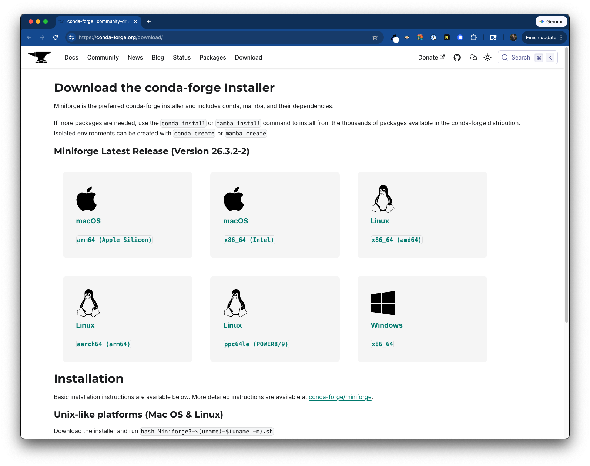
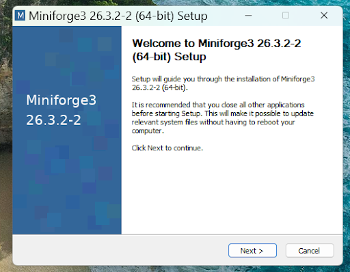
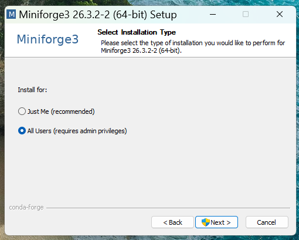
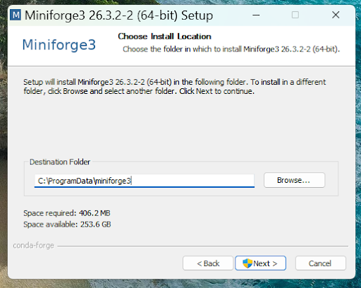
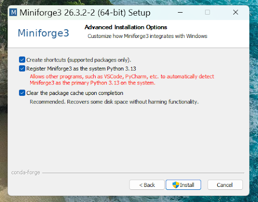
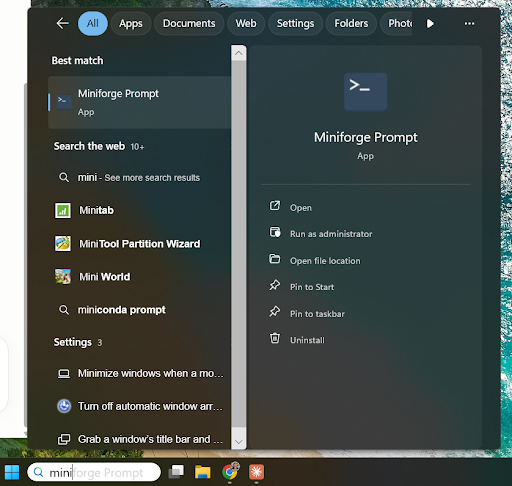
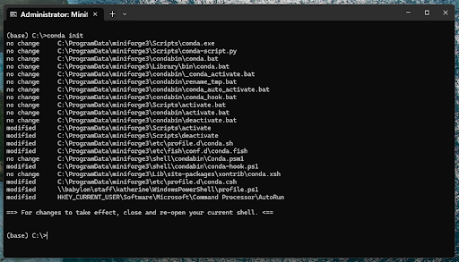

Getting Started with Python
Pre-workshop prep
Please work through the following installations and configurations before attending the workshop:
NoteInstallation instructions (collapsed to save space)
1. Install Positron
Positron is the newest data science IDE (Integrated Development Environment) from Posit (the makers of RStudio) that combines the best features of RStudio (e.g. the data explorer, plots pane, etc.) with the flexibility and multi-language support of VS Code (a general-purpose IDE and a popular envrionment for writing Python code). Download and install Positron following these instructions.

You can expand the features and capabilities of Positron by installing extensions. It already comes bundled with those needed for this workshop (Quarto, Jupyter notebooks), but know that you can install additional extensions, as needed, from the Extensions menu in the Activity Bar.
2. Install Miniforge3
conda is both a package installer and environment manager, built for data science work. We’ll learn more about it (and use it!) during the workshop. conda can be installed via several distributions (i.e. bundled collections of software that are packaged and distributed together for easy installation). The most well-known, Anaconda, bundles thousands of pre-installed packages you may never use, and requires accepting a commercial license for organizational use. Miniforge3 is a free, minimal alternative that gives you conda without the bloat, so you install only what you need. Installing Miniforge3 means you’ll receive a base environment containing Python, the conda package manager, and their essential dependencies. Follow the appropriate instructions, below, to install Miniforge3:
- Select the appropriate
Miniforge3release from https://conda-forge.org/download/ to download a shell script (.shfile) for installation:

- Run your shell script in your Positron Terminal to install
Miniforge3. To do this:- Make sure you’re in your home directory. Check to see where you are in your computer by typing
pwd(“print working directory”) in your Terminal. If you’re already in your home directory, it should return something like,/Users/your-user-name. If you’re not in your home directory, you can jump there by typingcd ~(cdstands for “change directory”, and~is a shortcut for jumping home). - Move into your
Downloadsfolder, where your shell script currently lives, by typingcd Downloadsin your Terminal. - Run your shell script by typing
bash downloaded-file-name.sh(mine was named,Miniforge3-Darwin-arm64.sh) in your Terminal.
- Make sure you’re in your home directory. Check to see where you are in your computer by typing
- Follow the prompts in your Terminal to complete the installation:
- continue pressing ENTER until your reach the end of the license
- type
yesto accept the license terms - make sure to install it to your home directory (e.g.
Users/samanthacsik/miniforge3) when prompted - if asked if you want to update your shell profile to automatically initialize conda, type
yes
- Select the appropriate
Miniforge3release from https://conda-forge.org/download/ to download an executable (.exefile) for installation:
- Double click on the downloaded
.exeto begin the installation process. Follow the prompts:
- Click next on the setup window:

- Install for All Users, then click next:

- Check that the destination folder is listed as
C:\ProgramData\miniforge3, then click next:

- Make sure all three Advanced Installation Options are selected, then click Install:

- Open up Miniforge Prompt:

- Run
conda init:

Intro slides
We’ll start by familiarizing ourselves with some important terminology and concepts. You can access the Google Slides below:
Let’s write & run some Python code
tbd
Contribute
Have suggestions for improving these materials? File an issue on GitHub.